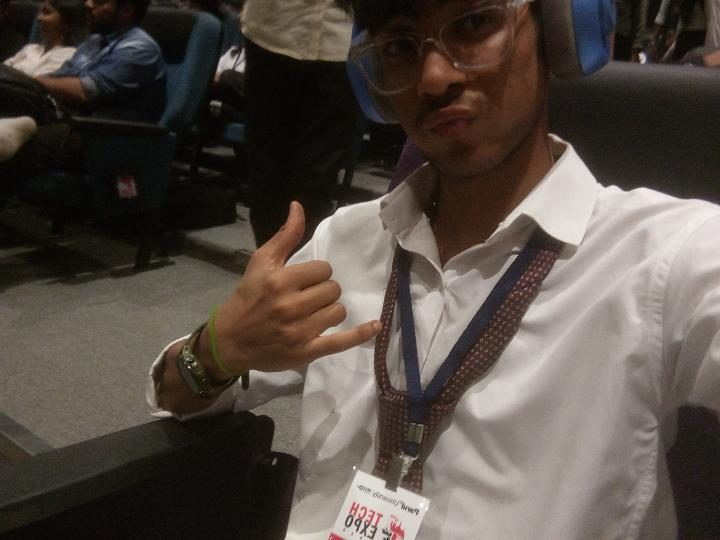
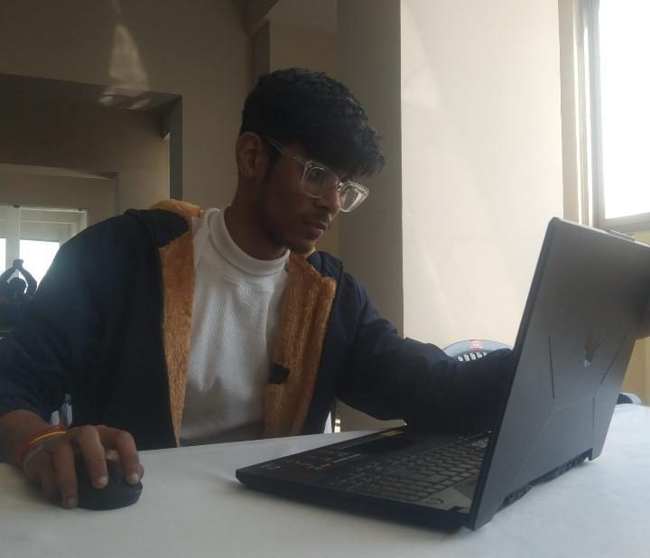
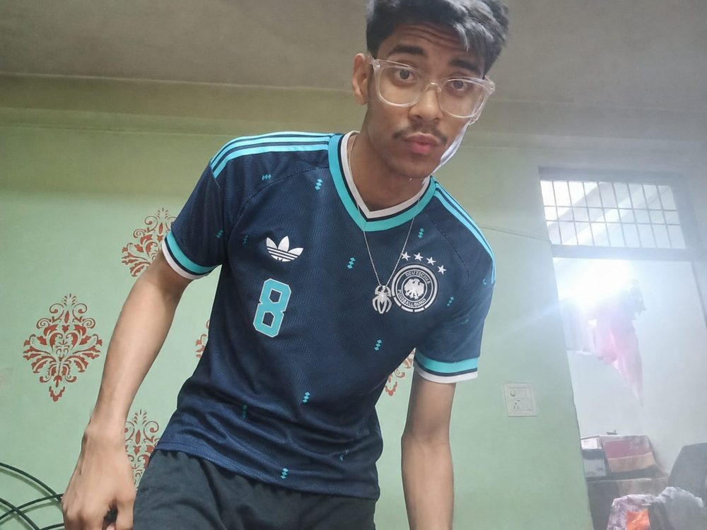
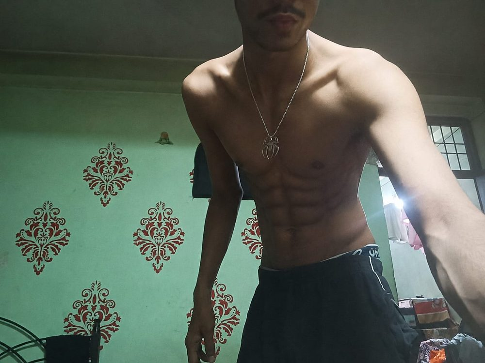
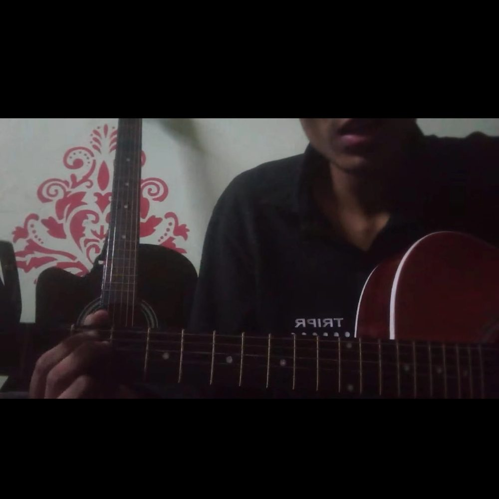

COMPOSITE FILE · SUBJECT 001 · DELHI, IN
Engineering student who builds systems, plays up front on the pitch, and taught himself the rest — every setback so far has just been fuel.
ACADEMICS & ENGINEERING
A 97th‑percentile score in JEE Mains proved the ceiling was high — missing JEE Advanced proved it wasn't the whole story. Both landed in the same year health problems forced a full stop on football. What followed was a rebuild, from the ground up, now underway at Delhi Technological University.
the coursework runs through Engineering Mathematics, Physics and Electrical Engineering — the fundamentals underneath everything built since. Outside the syllabus, that foundation turns into shipped projects and competition entries:
The target sits at the top of the industry: Google, Microsoft — earned through the same discipline that closed the JEE Advanced gap, not around it.

FILE NOTE 01
Missed the exam that was supposed to define the year. Kept the discipline that got him 97th percentile anyway. That's the whole method — the scoreboard resets, the work ethic doesn't.
GAME DEV, DESIGN & CODE
Software is only one layer. Over the past year the toolkit expanded sideways on purpose — video editing, drawing, and full solo game development sit next to the core engineering, each picked up independently and pushed until it held up on its own.
IN DEVELOPMENT
A high-tier, narrative-driven video game built entirely solo — protagonist, world, and systems all handled from scratch. The bar it's aimed at: standing shoulder to shoulder with genre giants, not underneath them.
The engineering backbone runs deeper than any one project — modular AI/ML pipelines and computer-vision systems built to be reused, not one-offs. Even downtime gets treated like a build problem: tuning an AMD Radeon integrated GPU to run GTA V, Mortal Kombat X and the Call of Duty: Modern Warfare series properly, studying story-driven worlds the way a builder studies a system, not just a player passing time.

FILE NOTE 02
Nobody assigned the game dev, the drawing, or the CV pipelines. Picked up because the toolkit felt incomplete without them — then kept because incomplete stopped being acceptable.
FOOTBALL — STRIKER
Health issues forced a complete stop on football at the exact moment everything else was already under pressure. Coming back wasn't optional — it was the first proof that the rebuild was real.
Now training as a dynamic, active striker, with a mindset that's shifted from chasing personal glory to simply being ready when it matters. The current target: breaking into competitive Delhi leagues, with trials set on Hindustan Football Club.
Conditioning off the pitch backs the game on it — strength and mobility work built to hold up over 90 minutes, not just look good in a mirror.


FILE NOTE 03
The pause wasn't a choice. The comeback is. Every session logged since is the difference between the two.
MUSIC — GUITAR
Guitar joined the toolkit the same way everything else did this past year — no teacher, no shortcut, just repetition until the hands stopped fighting the chords.
It's the one discipline here with no deadline, no leaderboard, no trial to make. Which is exactly why it stayed — proof the rebuild wasn't only about winning, some of it was just about building something worth keeping.

FILE NOTE 04
No stage booked yet. Doesn't matter — the point was never the audience, it was proving the hands could learn something new on command.